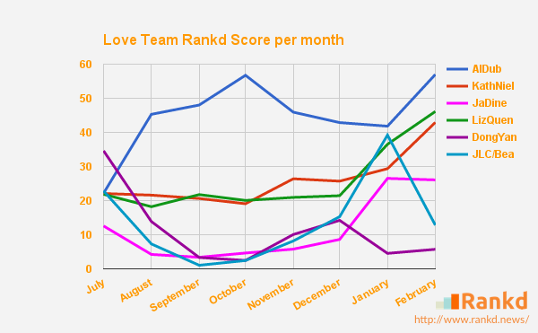
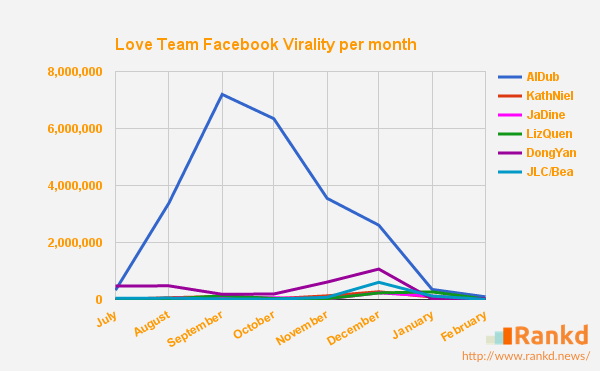

AlDub: Breaking down the statistics behind the hype
February 2016AlDub has definitely flattened the competition in terms of virality after they first meet on split-screen last July 2015. They have since changed the Philippine showbiz landscape, as they capitalized much on their social media power that broke a series of records.
Fast forward to 7 months after, we can see that AlDub's news mentions has already went down from its peak of 300+ news mentions last October. We sourced these news from GMA7, ABSCBN2, PEP, Rappler, Inquirer, Philippine Star, and Manila Bulletin. We can see the slight uptick last December due to their MMFF entry `My Bebe Love #KiligPaMore` last Christmas day. Their never-ending line of new endorsements are also keeping the buzz alive for AlDub, helping them increase their news mentions.
To be able to check their virality online, we measured their Facebook virality, which can be measured in number of mentions, shares, likes, and comments. After calculating their virality score using Rankd special algorithm, we can see that the numbers are going down starting 2016. Their virality has now normalized to a level that likely follows the other love teams. With JaDine and KathNiel's shows Pangako Sa `Yo and 'On The Wings Of Love' signing off and LizQuen's Dolce Amore starting this February, the reign of AlDub will be put to test this month.